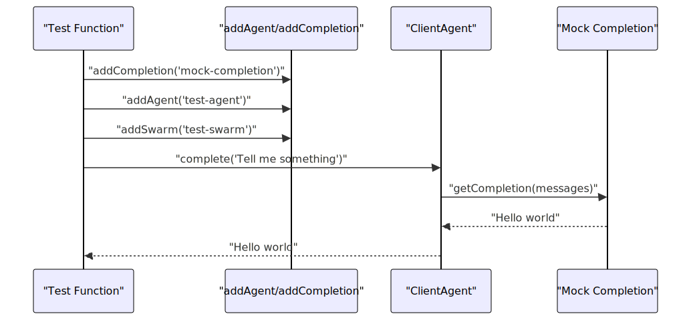
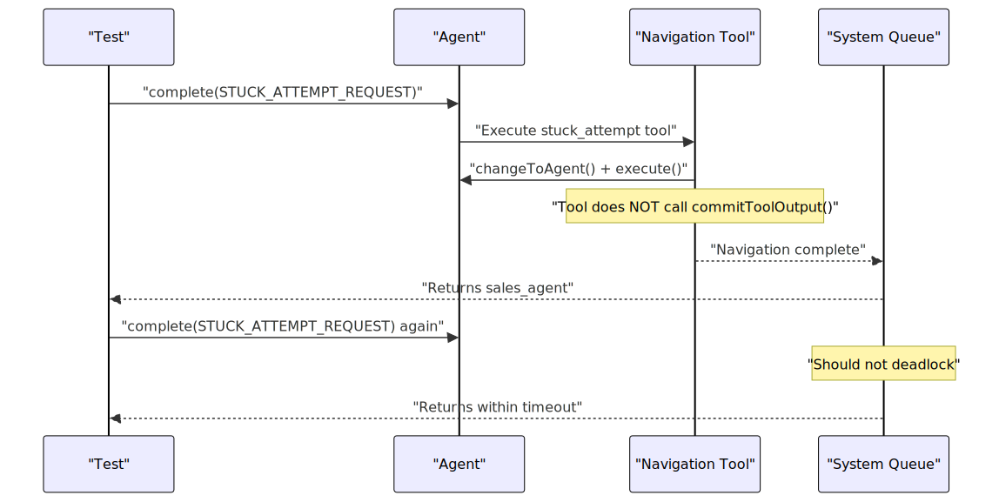
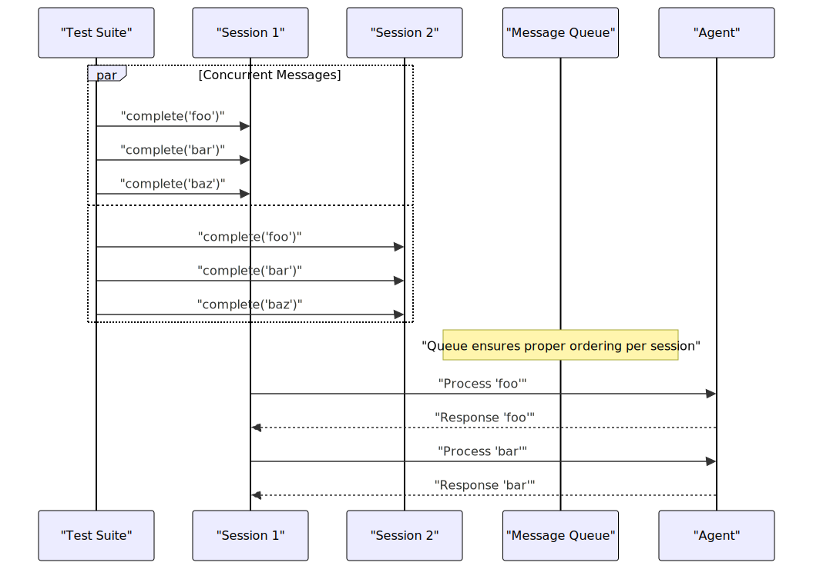

This page demonstrates practical examples of building agent swarm systems using the agent-swarm-kit framework and provides comprehensive testing approaches for multi-agent systems. It covers real-world usage patterns, test implementation strategies, and integration testing methods for ensuring system reliability and correctness.
For information about building multi-agent systems architecture, see Building Multi-Agent Systems. For tool integration patterns, see Tool Integration. For error handling strategies, see Error Handling and Recovery.
The testing framework validates core system functionality through comprehensive integration tests that exercise real multi-agent workflows, session management, and tool execution patterns.

The most basic example demonstrates creating an agent with mock completion and testing its response:

This pattern is implemented in test/spec/completion.test.mjs:14-50 where a mock completion returns a fixed response, and test/spec/completion.test.mjs:52-116 demonstrates using different completions for different agents within the same swarm.
The navigation test demonstrates a triage system with agent routing:

The implementation creates tools that handle navigation between agents using changeToAgent() and execute() functions as shown in test/spec/navigation.test.mjs:80-114.
The connection tests validate that the system properly handles multiple concurrent sessions:
| Test Scenario | Implementation | Validation |
|---|---|---|
| Session Queue Management | test/spec/connection.test.mjs:28-72 | Ensures proper message ordering |
| Swarm Orchestration | test/spec/connection.test.mjs:74-188 | Validates agent state per connection |
| Message Queuing | test/spec/connection.test.mjs:190-320 | Tests concurrent message processing |
| Server-side Events | test/spec/connection.test.mjs:322-411 | Validates makeConnection callback |

The disposal tests in test/spec/dispose.test.mjs:24-371 verify that all session resources are properly cleaned up, including session lists, agent lists, and history lists.
Navigation tools demonstrate complex multi-step operations:

The tool implementation pattern is shown in test/spec/navigation.test.mjs:80-96 where tools perform agent navigation and execute follow-up messages.
The system includes specific tests for preventing deadlock conditions in tool execution:

This deadlock prevention mechanism is validated in test/spec/navigation.test.mjs:256-280 and test/spec/navigation.test.mjs:283-374.
The system implements rescue strategies for handling various error conditions:
| Error Condition | Rescue Strategy | Test Implementation |
|---|---|---|
| Non-existent Tool Call | Flush and placeholder | test/spec/resque.test.mjs:21-76 |
| Empty Model Output | Placeholder response | test/spec/resque.test.mjs:78-125 |
| Failed Tool Validation | Flush and placeholder | test/spec/resque.test.mjs:127-197 |
Configuration for rescue strategies:
CC_RESQUE_STRATEGY: "flush" - Clear invalid operationsCC_EMPTY_OUTPUT_PLACEHOLDERS: ["Resque"] - Fallback responsesThe validation tests ensure all required dependencies are present:

Each validation test in test/spec/validation.test.mjs:66-144 checks for specific missing dependencies and verifies that the system properly rejects invalid configurations.
Integration tests validate that the system maintains message order under concurrent load:

This pattern is tested extensively in test/spec/connection.test.mjs:190-320 with validation that assistant messages maintain proper order even under concurrent load.
The event system allows for custom message emission outside the normal chat flow:

Event testing is implemented in test/spec/connection.test.mjs:413-473 and test/spec/connection.test.mjs:475-522 to ensure events are properly delivered to listeners without affecting chat history.
Resource disposal tests ensure proper cleanup:
Key patterns for testing concurrent operations:
Promise.all() with multiple identical operationsEffective mock completions for testing:
sleep()